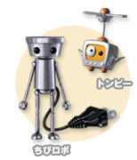

ある日、サンダースン一家にやって来た"ちびロボ"。
マネージャーロボのトンビーと一緒に、家族のみんなをハッピーにして、ちびロボランキングの一位を目指してがんばります。
落ちているゴミを拾ったり、歯ブラシでお掃除したり、金魚にえさをあげたり、パパ、ママ、娘のジェニーや飼い犬のタオに喜んでもらえるようなお手伝いや、おもちゃたちの願いを叶えてハッピーポイントを溜めるとランキングがあがって行きます。
ちびロボのエネルギーは電気！バッテリーが切れる前にコンセントを探して充電しないといけません。最初はかなり頻繁に充電しないと大変だったのですが、ランキングがあがってバッテリーのサイズが大きくなると、動ける範囲も広がって、キッチンや２階にも行ける様になりました。動ける範囲が広がると『ちびロボ』の世界もだんだん広がります。おもちゃたちから着ぐるみをもらって正義の為に働くもよし、タオの足跡を掃除するのも良し・・・でも、チマチマ動いているだけで相当楽しいので、ストーリーを無理に進めることも無く、ゆったり、まったり自由に遊べてしまいます。 |